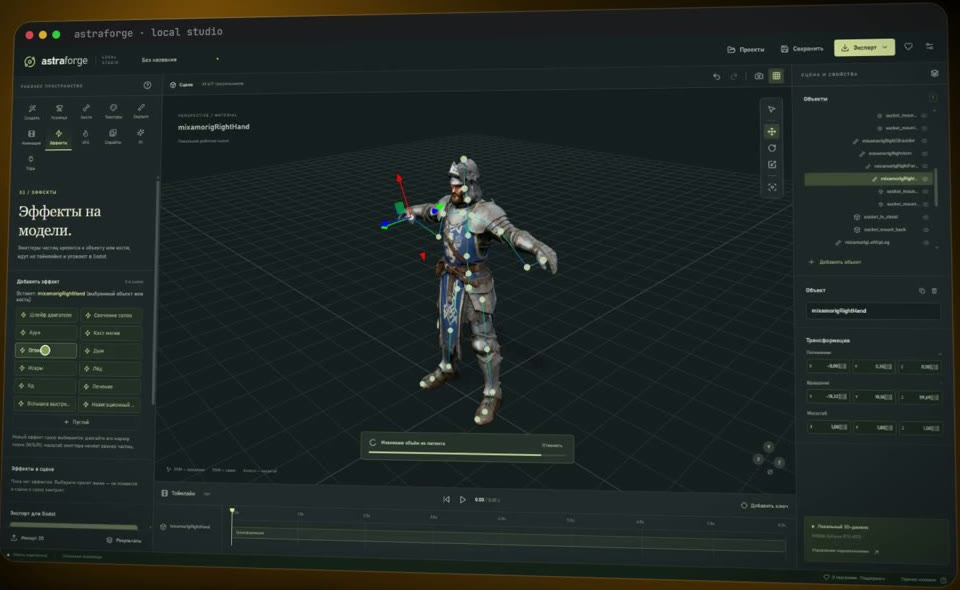

3D-студия для игр
у тебя на компьютере.
Концепт → 3D-модель → риг → анимации → эффекты → пакет для Godot или спрайты. Всё локально, без облака. Скачать — бесплатно, исходники открыты (MIT). Подписка — чтобы каждое обновление приходило к вам само.

Скачать бесплатно
Один установщик для Windows. При запуске выберите «Быструю» установку (≈ 30 ГБ, основные движки) или «Полную» (≈ 95 ГБ, всё сразу) — дальше он сам поставит Blender, 3D-движки, модели и анимации.
- Скачанная версия ваша навсегда — без ограничений и рекламы
- Видеокарта NVIDIA (проверено на RTX 4070 12 ГБ), Windows 10/11
- Без подписки студия не обновляется: новые версии — вручную, новым установщиком
Обновления сразу у вас
Всё, что я добавляю и исправляю в AstraForge, сразу приходит к вам: студия при каждом запуске сама проверяет, скачивает и ставит свежую версию.
Месяц5 $490 ₽
Год · экономия 18 %49 $4800 ₽
- Новые инструменты, 3D-движки, эффекты и исправления — в день выпуска
- Ключ приходит на почту и работает на всех ваших компьютерах
- Отмена в любой момент: ключ действует до конца оплаченного срока
- Оплата картой любой страны, российской картой или по СБП
Месяц или год выбираются на странице оплаты.
Как включить обновления
- Придёт письмо с ключом вида AF-XXXXXX-XXXXXX-XXXXXX-XXXXXX
- В студии откройте «О программе» → «Подписка», вставьте ключ и нажмите «Ввести ключ»
- Готово: при каждом запуске студия сама ставит свежую версию
Нужна версия 0.4.1 или новее. Ключ не дошёл или потерялся — напишите в комментариях на канале, вышлем заново.